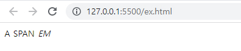
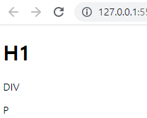
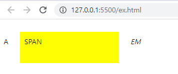

CSS Block/Inline
Block와 Inline 그리고 inline-block
CSS에서 display 속성은 웹페이지 상에서 엘리먼트들이 어떻게 보여지고 다른 엘리먼트와 어떻게 상호 배치되는지를 결정합니다. 여러가지 display 속성값 중에서 가장 기본이지만 은근히 햇갈릴 수 있는 inline과 block, inline-block에 대해서 알아보도록 하겠습니다.
inline
display 속성이 inline으로 지정된 엘리먼트는 전후 줄바꿈 없이 한 줄에 다른 엘리먼트들과 나란히 배치됩니다. 대표적인 inline 엘리먼트로 <span>이나 <a>, <em> 태그 등이 있습니다. 여러 개의 inline 엘리먼트 다음과 같이 마크업하면 줄바꿈 없이 순서대로 한 줄에 보이게 됩니다.
inline 속성 출력해보기
<a>A</a>
<span>SPAN</span>
<em>EM</em>출력 결과
inline 엘리먼트를 사용할 때 주의할 점은, width와 height 속성을 지정해도 무시된다는 것입니다. 해당 태그가 마크업하고 있는 컨텐트의 크기 만큼만 공간을 차지하도록 되어 있기 때문입니다. 또한, margin과 padding 속성은 좌우 간격만 반영이 되고, 상하 간격은 반영이 되지 않습니다.
block
display 속성이 block으로 지정된 엘리먼트는 전후 줄바꿈이 들어가 다른 엘리먼트들을 다른 줄로 밀어내고 혼자 한 줄을 차지합니다. 대표적인 block 엘리먼트로 <div>이나 <p>, <h1> 태그 등을 들 수 있습니다. 예를 들어, 여러 개의 block 엘리먼트 다음과 같이 마크업하면 매번 줄바꿈 되어 여러 줄에 보이게 됩니다.
block 속성 출력해보기
<h1>H1</h1>
<div>DIV</div>
<p>P</p>출력 결과
block 엘리먼트는 inline 엘리먼트와 달리 width, height, margin, padding 속성이 모두 반영이 됩니다.
inline-block
display 속성이 inline-block으로 지정된 엘리먼트는 기본적으로 inline 엘리먼트처럼 전후 줄바꿈 없이 한 줄에 다른 엘리먼트들과 나란히 배치됩니다. 하지만 inline 엘리먼트에서 불가능하던 width와 height 속성 지정 및 margin과 padding 속성의 상하 간격 지정이 가능해집니다. 대표적인 inline-block 엘리먼트로 <button>이나 <input>, <select> 태그 등을 들 수 있습니다.
<span>태그에 inline-block으로 지정해주기
<a>A</a>
<span>SPAN</span>
<em>EM</em>출력 결과
inline-block 엘리먼트는 위와 같이 헤당 엘리먼트의 스타일을 display: inline-block로 지정해줘야 합니다. inline-block을 이용하면 여러 개의 엘리먼트를 한 줄에 정확히 원하는 너비만큼 배치할 수 있기 때문에 레이아웃에 활용할 수 있습니다.